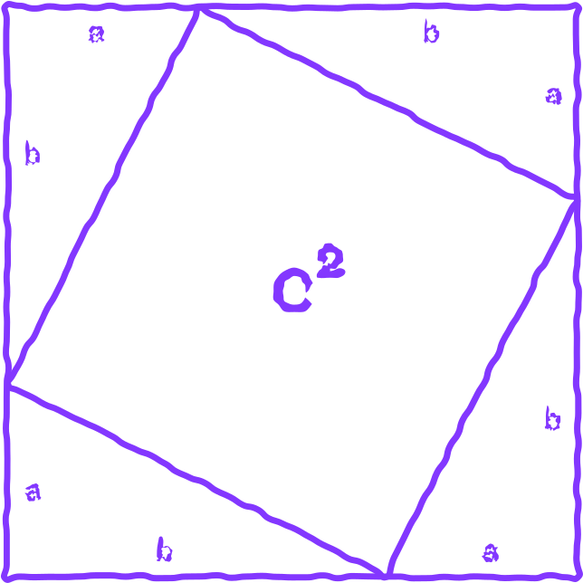

ANCI NT GREEK PHILOSOPHY in modern days
Table of content Table of content
Ever wondered how society came to be ?
- Ancient Greek Philosophy
- Modern Philosophy
- Pythagoras // Pythagorean Theorem
- Thales // Thales Theorem
- Aristotles // Educational Institutions
- Origin of the Universe
- Plato // Human Soul
- Foundations of Modern Religion
- Forms of Political Organizations
- Plato’s Republic
- Political Dialogues // Republic, Law, Stateman
- The Team
- The Magazine
01 What is Ancient Greek Philosophy
Ancient Greek philosophy is estimated to have begun sometime during the 6th century BC.
The usual topics the Greek philosophers discovered were contemplating about topics such as mathematics, ethics, biology, politics, religion, and astronomy.
“...Philosophy was used to make sense of the world using reason...”
Modern Philosophy
The teachings of ancient Greek philosophers are nowhere near irrelevant or forgotten. In contrary, it can add a lot of value if one learns about the wisdom and teachings of Socrates, Plato, or Aristotle, to name a few. In fact, the subjects that ancient Greek philosophers discovered, such as astronomy, mathematics, politics, and ethics are applied to many modern day discoveries and ideologies.
Education Education Education Education Education Education
Pythagoras and the Pythagorean theorem
Pythagoras
Pythagoras was an ancient Ionian Greek philosopher and the founder of Pthagoreanism. His political and religious teachings were well known and influenced the philosophies of Plato, Aristotle and through them, Western philosophy. The teaching most identified with Pythagoras is “metempsychosis” which holds that every soul is immortal and upon death, enters into a new body. Pythagoras was credited with many mathematical discoveries, including the Pythagorean theorem. Pythagoreans believed that all things were made of numbers. The number one representted the origin of all things and the number two represented matter. The number three was an “ideal number” because it had a beginning, middle and an end according to the Pythagoreans. Furthermore they believed that odd numbers were masculine and that even numbers were feminine. The number five represented marriage because it was the sum of two and three.
The Theorem
In mathematics, the Pythagorean theorem is a fundamental relation in Euclidean geometry
among
the three sides of a right triangle. It states that the area of the square whose side is
the
hypotenuse is equal to the sum of the areas of the squares of the other two sides. This
theorem can be written as an equation relating the lengths of the legs a, b and the
hypotenuse c.
a2 + b2 = c2
The theorem has been proven numerous times by many different methods - possibly the most
for
any mathematical theorem. The theorem can be generalized in various ways: to
higher-dimensonal spaces and to object that are not right triangles.
Thales
Thales or Thales of Miletus was a Greek mathematician, astronomer and pre-Socratic philosopher. He was one of the Seven Sages of Greece. Many, most notably Aristotle, regarded him as the first philosopher in the Greek tradition. He is often referred to as the Father of Science. Thales is recognized for breaking from the use of mythology to explain the world and the universe, instead explaining by offering naturalistic theories and hypotheses. Thales hypothesised that the nature of matter was a single material substance: water.
aRISTOTLE AND EDUCATIONAL INSTITUTIONS
aRISTOTLE
Aristotle was a Greek philosopher and polymath during the Classical period in Ancient Greece. Taught by Plato, he was he founder of the Lyceum, the school of philosophy and the Aristotelian tradition. His writings cover many subjects including physics, biology, zoology, logic, ethics and many more. Aristotle provided a complex synthesis of the various philosophies existing prior to him. It was above all from his teachings that the West inherited its intellectual lexicon, as well as problems and methods of inquiry. As a result, his philosophy has exerted a unique influence on almost every form of knowledge in the West and it continues to be a subject of contemporary philosophical discussion.
03 End of the universe? Origin
Origin of the universe
The creation myth
The ancient Greek philosophers believed that the world began with emptiness that they called Chaos. This proceeded with the formation of the earliest deities that represented different aspects or layers that were necessary for the creation of a functioning universe. These three gods were Gaea, Tartarus, and Eros. Gaea was considered as the embodiment of the Earth, Tartarus was representing the underworld - the place where the wicked go tor suffering and the Titans get punished for their deeds, Eros was the embodiment of sensual love. After the creation of love, Gaea and Chaos started to create everthing that we sense but also beyond our senses that exisits in the universe. This all led to the birth of the darkness - Erebus, and night - Nyx. This union gave life to the bright upper air - Aether and the Day - Hemera. Afterwards the Fate - Moros, the Doom - Ker, the Death - Thanatos, the Sleep Hypnos, the Dreams - Oneiroi, the Old Age - Geras, the Pain - Oizus, the Revenge - Nemesis, the Strife - Eris, the Deceit - Apate, the Sexual Pleasure - Philotes, the Blame - Momos, and the Daughters of the Evening - Hesperides.
Uranus - the embodiment of the Starry Sky together with Gaea gave life to three Cyclopes - a race of one-eyed giants, three Hecatoncheires - strong giants with fifty heads and one hundred arms, and twelve Titans - a family of giants that were later overthrown by the Olympian gods.
Plato's human soul
According to Plato’s teachings, he explained that every human soul is divided into three parts -
Rational
λογιστικόν
This is the first part of the human soul. It functions using logic and rational
thinking
in every decision and action it makes. It is easy for this part to differenciate
dreams
from reality.
What Plato firmly believed in was that all the people who are responsible for
governing
anyone should be deeply connected to their rational part to make decisions that are
just
and not based on one’s feelings or emotions.
https://study.com/academy/lesson/platos-tripartite-theory-of-the-soul-definition-parts.html
Spirited
θυμοειδές
The human soul’s spirited part is the most heated and strongly emotional. Despite
being
responsible for all the strong emotion a person feels, it is especially focused on
anger
and temper.
It “comes to life”, for example, when the one feels like they’ve been mistreated or
when
one faces a great challenge and feels the urge to push themselves to the limits to
overcome it.
Spirited element thrives when winning or being praised and is also related to the
desire
to be and do good.
https://philosophycourse.info/platosite/3schart.html
Appetitive
ἐπιθυμητικόν
The element that represents all the human desires for pleasures, physical
satisfactions,
and comfort. It is responsible for everything from the most basic desires such as
sense
of starvation and cravings, thirst, and fatigue.
This part actually includes uncountable amount of appetites that, according to
Plato’s
teachings, are often going against one another and causing trouble in the psyche.
https://en.wikipedia.org/wiki/Plato%27s_theory_of_soul
Foundations of modern religion
Building blocks of religion
Religions consist of cognitive, neurological, behavioral and developmental traits that form a complex adaptive system.The underlying adaptive goal of religious systems is to foster social coordination within communities. The workings of religious systems can at their core be proken down into eigth primary building blocks.
These eigth building blocks are; authority, meaning, moral obligation, myth, ritual, sacred, supernatural agents and taboo. Religious sytems which require energy like all systems, are fuled by ritual behaviors.